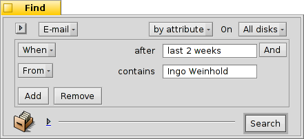

| 索引 |
|
Haiku's mail system Using labels Using queries More tips |
操作练习：邮件管理
本次练习讲解主要针对 Haiku 下的邮件管理。并且我们假定 电子邮箱 首选项中已经对邮件服务作了正确的配置，并且您已经对 电子邮箱 应用的基本功能有了一定的了解。
 Haiku 邮件系统
Haiku 邮件系统
如果您在使用 Haiku 之前有过其他系统的经验，您可能会习惯于 MS Outlook 或者 Mozilla 的 Thunderbird 等大型邮件程序。您必须输入所有有关邮件服务器地址的信息进行配置，并且它们使用各自的联系人数据库。它们负责发送和获取邮件，并将邮件存入一些大的特殊文件。
邮件客户端的更换会非常的麻烦，您必须进行导入/导出等操作，还要进行系列的转换。同时使用多个邮件客户端检查邮件也是不可行的，可能会带来不必要的混乱。
Haiku 邮件系统稍有不同。它由一些较小的独立模块构成。
mail_daemon 负责与您的邮件服务器进行通信。电子邮件 首选项集中管理邮件账户的配置，例如邮件检查时间。
每个收到/发送的消息都将保存为单个的邮件文件，它们的邮件头信息（如发送者，主题，日期）和状态（如新邮件，已回复，已发送）保存为 BFS 属性。这样能够方便使用 Haiku 的快速查询进行搜索和过滤。

由于每个邮件都是独立的文件，进行查阅就非常简单，就像是在使用 图片查看器 浏览图像目录（或者查询结果）。在您使用上一个/下一个按钮浏览邮件时，在打开的文件浏览器窗口中，您可以看到当前浏览文件的切换选中。
因为他们都是独立的文件，无论是使用查看器还是 Haiku 的 电子邮箱 程序都没有任何差别。
与此相似，创建新邮件也就是相当于去创建一个由 mail_daemon 管理并负责发送的新文件。联系方式则由 联系人 应用进行管理。
总而言之，其他的邮件客户端会负责所有的事情；然而对于 Haiku ，从与邮件服务器交互，到查看您的所有邮件，以致于邮件搜索和过滤的工具，它则通过很多小工具和常用文件管理来完成：
mail_daemon 用于获取、发送邮件，并将其保存为常规文件。
文件浏览器窗口和查询用于查找和显示电子邮件文件。
电子邮箱 程序依赖于联系人 程序提供的系统内联系人管理功能，用于查看邮件文件和新建邮件。
使用 文件浏览器 和查询功能进行邮件管理确实很不错。您于此获得的经验可用于任何和文件处理有关的问题。例如图像，音乐，视频，联系人以及其他任何文档，都可以使用文件浏览器，因为它是所有文件管理的核心。
同时，在这些系统领域的提供不仅仅能够惠及电子邮件处理，还会有助于所有使用这些功能的应用程序。
Using labels
在您检查自己的新邮件时，您可能希望之后在仔细的进行阅读。您可以使用电子邮件菜单的 ，让它们仍然保留在您的 “新邮件” 查询中，以这种方式让任务保留起来。
当然另一种方式是撰写回复并保存为草稿。但是如果您不希望编写回复，而只是留待以后再次阅读，这样就不大方便。

Better use to create a new label with or choose an existing label to categorize your mail. For example, you could call the label "Later", and then query for that when you find more time.
Or you use different labels for specific projects. For example, I created a label "HUG" (for "Haiku user guide") under which I collect every mail that may influence the contents of the user guide, like commit messages about code changes that alter or introduce some feature or anything else I feel could improve the user guide.
In any case, try to keep the label name short. That way it always fits in a normally wide "Label" column in Tracker.
Once you've dealt with the email, you can use to clear the email's label attribute.
Labels are saved in ~/config/settings/Mail/labels, which is opened when you choose . Here you can add, delete or rename your labels. Conveniently, each label file is also a query, meaning you can doubleclick it to start a query for emails with that label. Handy to check first before deleting a label that you think you don't need anymore.
You don't have to open an email with the Mail application to set its label. With the Tracker add-ons Label as… you can select some email files and set or remove their label in one go.
使用查询
当然，您指定目录储存邮件，您打开这个目录，里面就是您所有的邮件。时间久了，这个目录难免会变得拥挤不堪，由于有上千个文件，并且它们属性需要解析和分类，其中全部内容的显示需要很长的时间。并且，通常您并不关心两年前有关尼日利亚和它们遗留问题的古老邮件...
查询，大救星！
By using queries, you can narrow down the view of your mails. Actually, the mailbox icon in the Deskbar uses queries. Right-click the icon to open its context menu:

就是对 “草稿” 状态的查询，也就是您在使用 电子邮箱 保存邮件时所设置的状态。
和 都是常规目录的链接（在我看来，并没有很大用处）。
子菜单由对状态为 "新邮件" 的邮件的一次查询实现。（当然，也使用了同样的查询来修改邮箱图标上的邮件数量）。
You can add your own queries (or folders, applications, scripts etc.) to that context menu too, by putting them or links to them into ~/config/settings/Mail/Menu Links. In the screenshot above, for example, the label folder ~/config/settings/Mail/labels was linked there, to have quick access to labeled emails from the the mailbox icon of the Deskbar.
查询实例
下面是几个有用的查询实例：
 |
 |
| This finds all mails with the label "Later". | 查询过去两天的所有邮件。 |
 |
 |
| 查询两周内 Ingo Weinhold 发送的所有邮件。 | 查询 12 个月内 Haiku commit list 上的所有内容。 |
更多帮助
如果您没有将查询保存为 "Query" 而是 "Query template"，那么使用它并不会显示结果窗口，而是 查询... 窗口。 通过这种方式，你可以轻松地修改搜索邮件的主题和发送者的字符。比如将时间 "2 天" 限制在 "3 天"。
在 文件浏览器首选项 中激活 “实时过滤” 将允许您进一步的筛选查询结果。通常情况下，在使用实施过滤的情况下查询最近三天的邮件就已经足够了。 这种方式最大的优点在于，您不需要准确的指定所要搜索的属性，因为在过滤时已经将所有显示属性包括在内。
When you're managing your emails via queries - and why wouldn't you? - you should configure a DefaultQueryTemplate that shows all the email attributes you normally want to see in a query result window, like Status, From, Subject, When.
First, you create a folder /boot/home/config/settings/Tracker/DefaultQueryTemplates/text_x-email. Then do one of your usual email queries and change the displayed attributes and window size and position of the result window to your liking. Now simply from its menu, open the newly created text_x-email folder, and there.